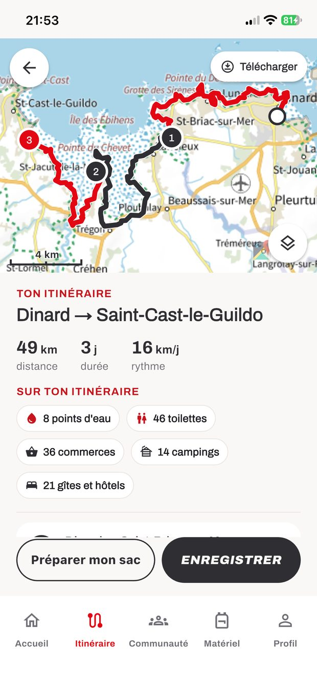
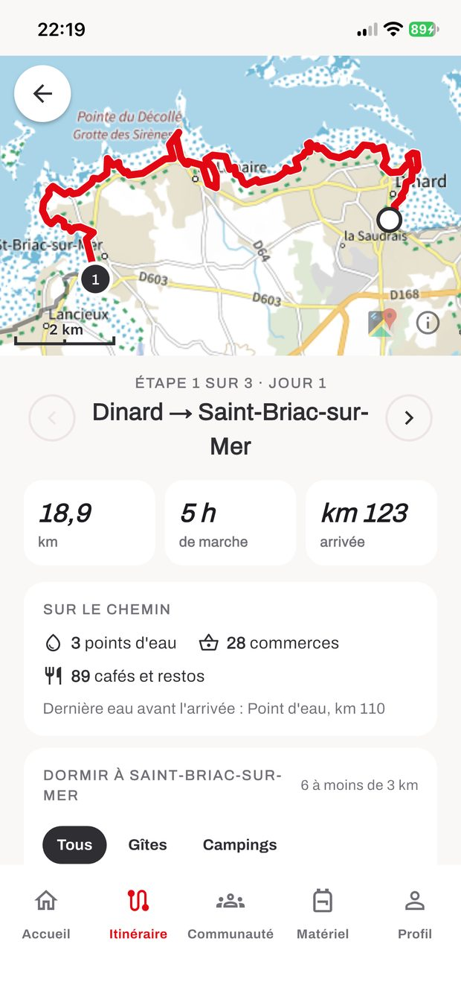
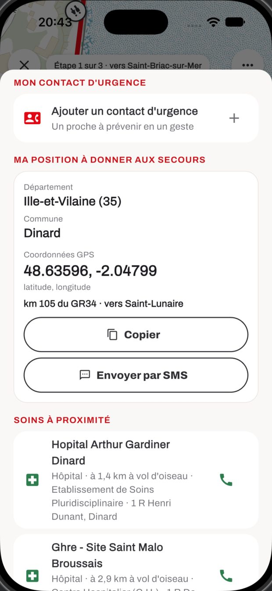
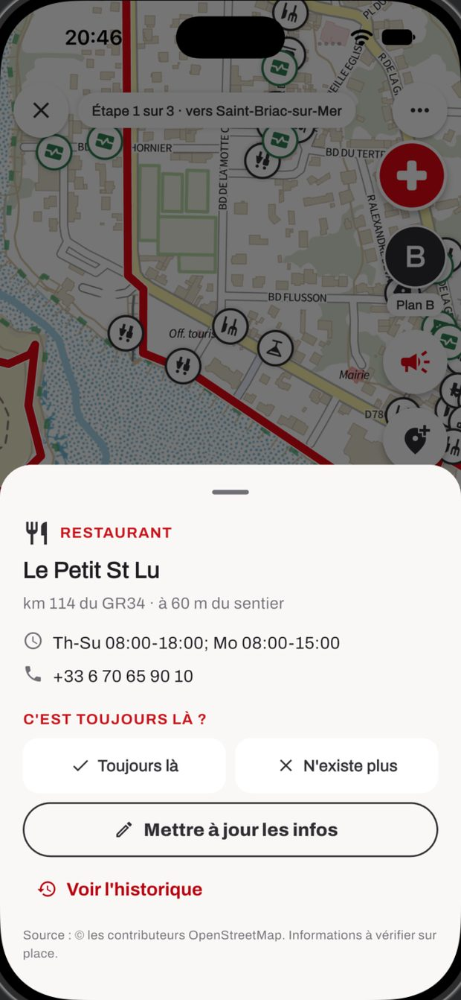
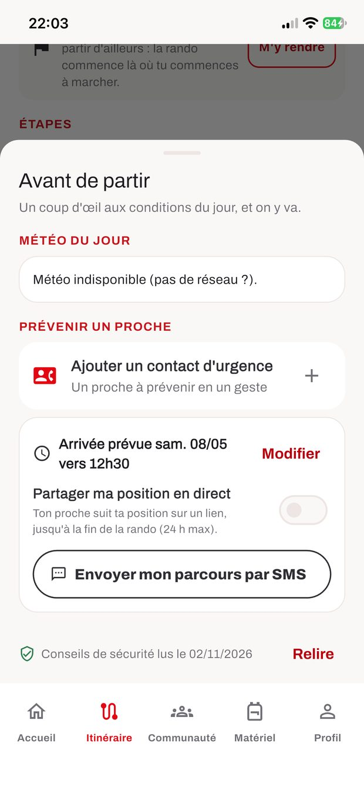
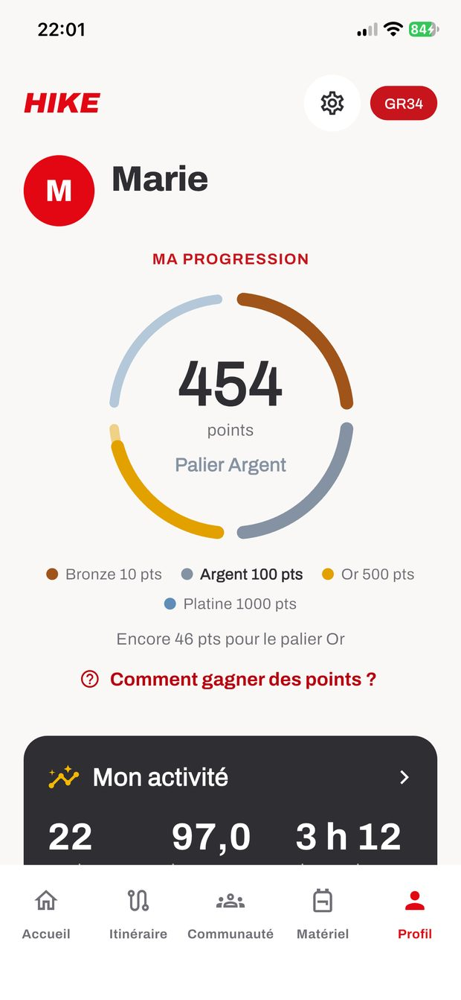

Départ · Le Mont-Saint-Michel
Pourquoi HIKE existe
« J'ai créé l'appli que j'aurais voulu avoir sur le sentier. »
Deux ans à marcher le GR34 par étapes, et toujours les mêmes galères : où dormir ce soir, rien oublier dans le sac, une carte qui ne charge plus sans réseau. HIKE rassemble tout ce qui m'a manqué.
Marie, fondatrice de HIKE


Hors-ligne
Carte IGN gratuite
Téléchargée avant de partir, elle marche sans réseau. Pour toujours gratuite.
0 pub
HIKE, une application sans pub pour ne pas te gêner pendant ta rando.
Saint-Malo
Sur le sentier, on finit toujours par se poser les mêmes questions.
HIKE a été pensée pour répondre à tous tes besoins sur le sentier, avant, pendant et après ta rando.
Perros-Guirec
Prépare ta rando avec HIKE.
- Ton départ, ton rythme
- Chaque soir, un lit
- Le niveau de chaque étape
- Eau, commerces, campings repérés
- Ton sac sans rien oublier

Brest
Vis ta rando avec HIKE.
- Ta carte, même sans réseau
- Ta position en direct
- Ton étape du jour
- Le dernier point d'eau
- Ton carnet de notes

Les secours, toujours à portée de main.
Pendant ta rando, le bouton SOS rouge reste à l'écran. Un appui, et tout est là :
- Appeler les secours112, SAMU, pompiers, secours en mer, gendarmerie, et le 114 par SMS.
- Dire où tu esTa commune et tes coordonnées GPS, à lire, copier ou envoyer par SMS.
- Prévenir un procheTon contact d'urgence reçoit ta position en un geste.
- Trouver des soinsLa pharmacie, le médecin, l'hôpital et le défibrillateur les plus proches.
- Te faire repérerLa lampe clignote en SOS et le sifflet sonne, même en mode silencieux.


Plus de 20 000 lieux
Tout ce qu'il te faut, le long du sentier.
Pour chaque étape, HIKE te montre ce que tu vas croiser et à quelle distance du sentier.
- BoirePoints d'eau, toilettes, et le dernier point d'eau avant l'arrivée
- MangerBoulangeries, commerces, cafés, restaurants
- DormirCampings, gîtes, hôtels, chambres d'hôte, bivouac
- Se soignerPharmacies, médecins, hôpitaux, défibrillateurs
- VoirPoints de vue et lieux à visiter
- RentrerGares, cars, taxis et bateaux
Et la communauté complète la carte : nouveaux lieux, avis et signalements (passage fermé, balisage effacé…).

Concarneau
Partage ta rando avec HIKE.
Une rando, ça se raconte.
- Tes proches te suivent en direct, sans installer l'appli.
- Ton bilan prêt pour Instagram : tes km, ton dénivelé et ton tracé en story.
- Des points et des badges à chaque kilomètre, de Bronze à Platine.


Quiberon
Gratuite pour marcher. Premium pour tout prévoir.
Tout ce qu'il faut pour marcher en sécurité reste gratuit, sans pub. Premium organise chaque soir et chaque imprévu de ta rando.
Vannes
Tu accueilles des randonneurs ?
Gîte, camping, hôtel, restaurant, commerce, office de tourisme ou lieu à visiter le long du sentier : vérifie ta fiche dans HIKE et garde-la à jour, gratuitement.
Arrivée · Saint-Nazaire
Sois parmi les premiers à marcher avec HIKE.
Inscris-toi sur la liste d'attente : tu seras prévenu dès la sortie, au printemps 2027, et tu pourras l'essayer avant tout le monde.
Rejoindre la liste d'attenteUn email au lancement, puis à chaque nouveau sentier. Pas de spam.

Sur ordinateur ? Scanne ce code pour t'inscrire depuis ton téléphone. À la sortie, le même code t'emmènera directement sur l'App Store ou Google Play.